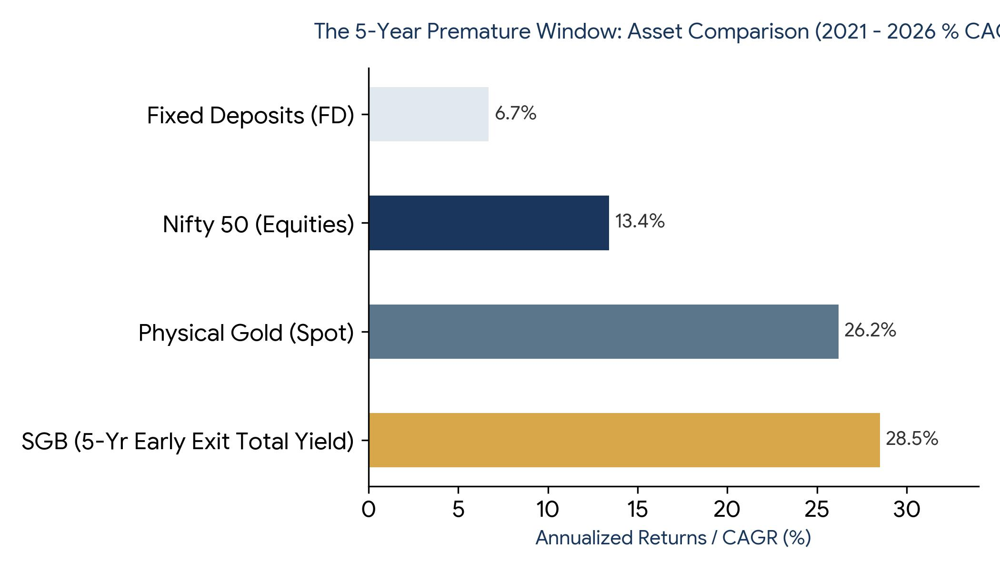
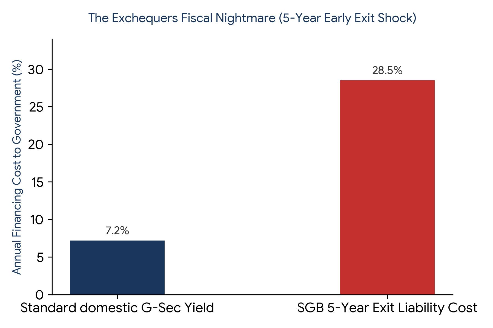

1. The Big Idea: Why SGBs Were Born
Imagine if you could buy pure gold without ever worrying about locker theft, recurring bank locker fees, or getting cheated on jewelry purity. Even better, imagine if that very same gold paid you extra interest cash every single year just for holding it, and you didn't have to pay a single rupee of tax on your final profits. Back in November 2015, the Indian government introduced the Sovereign Gold Bond (SGB) Scheme to offer exactly that package to the common man.
The government had an exceptionally clever macroeconomic plan. Instead of citizens buying physical gold biscuits, coins, or jewelry—which forces India to spend billions of valuable US dollars importing gold from foreign nations and hurts our national trade balance—people could buy 'paper gold' backed directly by the government. It sounded like a perfect win-win deal. You get safe, digital gold that grows exactly with international market prices plus an additional 2.5% fixed annual interest cash payout. Meanwhile, the national exchequer gets your hard cash as a direct loan to build infrastructure. But standing here in June 2026, this deal has broken all historical records—and the math has gone completely wild.
2. The Investor’s Jackpot: A Stunning 28.5% Annual Return
To truly understand why regular common men and retail investors are celebrating across the country, we must look at a real-life example hitting its official 5-year early exit window right now on June 8, 2026: the famous SGB 2021-22 Series III tranche. When this specific bond came out exactly five years ago in June 2021, you could buy it online digitally for an effective discounted price of just ₹4,839 per gram.
Fast forward to this very week in June 2026. Because global inflationary pressures, persistent geopolitical tensions, and massive accumulation by global central banks have sent international gold prices soaring straight through the roof, the Reserve Bank of India (RBI) has officially announced the current early cash-out price at a mind-boggling ₹15,512 per unit!

Let's unpack that ground reality math in simple terms: Your hard-earned money didn't just grow steadily; it delivered a breathtaking 220.56% absolute profit in a mere 5 years. On an annualized compounding basis (CAGR), that equals a massive 26.24% growth rate every single year from the gold price jump alone. When you layer the 2.5% annual fixed interest cash payments received along the way, your total effective return climbs to an incredible 28.50% per year!
To put this in perspective for the average household, look at alternative options over the exact same 2021 to 2026 timeframe. The Indian stock market (represented by the Nifty 50 index) gave a solid but vastly inferior 13.4% return. Standard bank Fixed Deposits (FDs) crawled along at roughly 6.7%. For a 100% safe, risk-free government bond to completely beat the equity index by more than double is an absolute anomaly in the history of personal finance.
3. The Sovereign Exchequer's Nightmare: The Early Exit Fiscal Shock
While retail investors are busy counting their historic golden windfalls, the corridors of the Ministry of Finance and the RBI are filled with immense public finance anxiety. The fundamental design flaw of the Sovereign Gold Bond lies in its core risk asymmetry: the state raised money in standard domestic fiat currency but bound itself to a heavy future liability indexed entirely to a globally priced, highly volatile commodity.
Gold behaves exactly like a financial safe-haven superhero during global structural crises—it spikes massively when things get economically rough or geopolitically unstable. Because international conditions over the last five years have been extraordinarily chaotic, gold bullion prices exploded beyond anyone's wild expectations. This has placed the national budget in an incredibly tough corner.

Consider what this means for the national budget: If the government had simply raised an equivalent amount of capital by issuing normal 5-year Government Securities (G-Sec bonds) back in June 2021, they would have locked in a highly predictable, comfortable, and stable borrowing cost of roughly 7.20% per year. Instead, due to the unstoppable surge in gold, they are now forced to pay out a staggering 28.50% per year on these early SGB exits!
The state is essentially paying aggressive, venture-capital-like returns on a risk-free sovereign debt instrument. Because the 5-year premature window allows thousands of investors to suddenly book profits all at once, it creates a massive, un-hedged cash outflow for the RBI. This represents a heavy structural transfer of wealth from general taxpayers directly to a select group of gold-owning affluent individuals, turning a smart currency-saving tool into an extremely expensive fiscal mistake.
4. Comparative Matrix: Why SGB Crushed Every Alternative
To understand exactly why the Sovereign Gold Bond became an absolute 'super-hit' for personal portfolios, we must look at how traditional modes of gold ownership stack up against it. Historically, the common man bought gold jewelry or coins. This meant losing substantial money to making charges (8% to 25%), bearing deep haircuts at resale, and constantly paying for secure bank lockers. SGBs fundamentally broke this paradigm. Let's look at the definitive breakdown:
| Feature / Metric | Sovereign Gold Bonds (SGB) | Gold ETFs / Mutual Funds | Digital Gold (Apps) | Physical Gold (Jewelry/Coins) |
|---|---|---|---|---|
| Annual Income Yield | Extra 2.50% Cash Paid Every Year | None (Fund management fees pull it down) | None (Storage fees may apply over time) | None (Incurs ongoing bank locker costs) |
| Tax on Maturity | 0% (Completely Tax-Free at 8 Yrs) | Fully taxed based on individual income slab | Fully taxed under short/long term gains | Taxed at 12.5% flat rate (LTCG) |
| Upfront Hidden Leakage | Zero (Often discounted online by ₹50/g) | Minor annual asset management fee (0.5%-1%) | 3% upfront GST leak on buy price | 3% GST + heavy 5% to 20% making charges |
| Resale Value Efficiency | 100% Full Market Spot Price Guaranteed | High liquidity on national stock exchanges | High, but buy-sell spread creates a 3-5% leak | Moderate (Dealers cut making charges and purity margins) |
5. Strategic Outlook: Policy Reversals and the Death of SGB Issuance
Recognizing that borrowing public money via gold-indexed assets has become an completely unmanageable fiscal hazard, the central government has launched aggressive counter-measures. While the government had previously slashed physical gold import duties from 15% to 6% in 2024 to curb illicit smuggling, that move backfired by causing a massive surge in gold import volumes and a heavy drain on the RBI's foreign exchange reserves.
In a massive, urgent policy reversal, the government has officially hiked the effective gold import duty right back up to its steep historic level of 15% (combining a 10% Basic Customs Duty with a 5% Agriculture Infrastructure and Development Cess). This tariff barrier represents a direct attempt to artificially cool down domestic bullion prices and protect our foreign currency reserves from bleeding further.
The absolute casualty of this structural public finance crisis is the SGB scheme itself. Realizing that paying a near 28.5% return on risk-free debt is a recipe for fiscal self-destruction, the Ministry of Finance and the RBI have officially and completely deleted the fresh SGB issuance calendar for the entire FY 2026–27 cycle. The scheme is effectively closed for new supply. The golden era of buying these highly lucrative bonds directly from the government at a discount is officially over.
So, what is the ultimate verdict? For the common citizen, the Sovereign Gold Bond has been an absolute, historic 'Super-Hit'—undoubtedly one of the most brilliant wealth-creation tools ever created for personal portfolios. For the sovereign exchequer, however, it has proved to be a structural 'Disaster' that exposed the national balance sheet to international commodity volatility. Moving forward into this new era, your only option to capture these golden yields is to hunt for existing, older SGB tranches floating on the secondary stock market exchange before the window shuts completely.
© MnV Consulting LLP | This blog is for informational purposes only and does not constitute legal or financial advice.